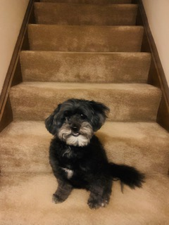

Agnes was found in the Lake of the Woods neighborhood of Locust Grove, Virginia in the summer of 2018. She had been the clear victim of abuse and neglect. She was severely anemic due to a massive flea infestation. She was suffering from a hernia and had fur mats so large that they had pulled off parts of her skin. It took almost three months for her to recover from her injuries. Her picture was posted on Facebook in November of that same year. When I saw her picture, I knew instantly that she was supposed to be my dog. Thankfully, the vet that had been caring for her felt that my husband and I were a perfect fit to give Agnes the "furever" home she needed and deserved. We brought her home the day after Thanksgiving and we have been a happy family ever since. Agnes has recovered from the effects of her neglect and is now thriving. She loves chicken (especially from Chick-fil-a), squeaky toys, long walks, and laying in the sun. She is happiest when she is in someone's lap as she is a Grade A lovebug. It is amazing how an animal that suffered so much at the hands of humans could still be so loving and trusting. She has taught us about love, forgiveness, and perseverance. We are blessed to have her in our lives and we will continue to spoil her absolutely rotten!